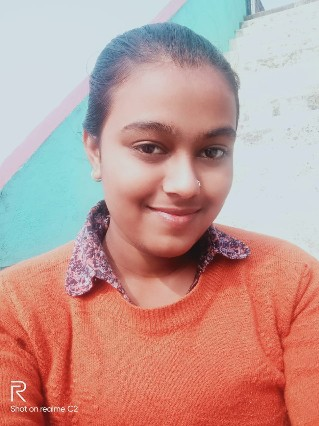

Email:shrutikumaridss940@gmail.com
Location: Bihar, India
LinkedIn: linkedin
GitHub: github
Professional Summary
I am currently pursuing a in Computer Science and Data Analytics (CSDA) at IIT Patna.
My expertise lies in Python libraries such as NumPy, Pandas, Matplotlib, and Seaborn for
data visualization, along with a solid foundation in data science, machine learning, and web
development. I have a proven track record of delivering impactful projects and content in tech and
education, with strong analytical, problem-solving, communication, and collaboration skills. Seeking
dynamic and challenging opportunities to contribute to data-driven decision-making and organizational
success.
Education
- Bachelor of Science in Computer Science and Data Analytics (CSDA)
- Institution: IIT Patna
- Skills Gained: Python, R, SQL, Tableau, data visualization, machine learning,
statistics, and exploratory data analysis (EDA).
Technical Skills
- Programming Languages: Python, R, SQL
- Data Visualization Tools: Tableau, Matplotlib, Seaborn
- Frameworks and Libraries: NumPy, Pandas, Flask, Angular
- Databases: PostgreSQL, MongoDB
- Other Tools: Machine learning models, web scraping
Projects
- Deep Health Analysis and Disease Prediction: Developed machine learning models
to predict diseases and implemented analysis for food recommendations, exercise plans, and
medicine.
- Smart Expense Tracker: Built a machine learning-powered application to analyze
expenses using Python, Angular, Flask, and PostgreSQL.
- Decentralized Idea Submission Platform: Designed a MERN-based platform with AI
integration for idea evaluation.
- Fashion Recommendation System: Worked on image preprocessing and authentic
fashion data collection.
Experience
- Sub-Coordinator, Data Science Club, IIT Patna (2024 - Present)
- Organized workshops and guided peers in data analysis and visualization projects
- Fostered collaborative learning and mentored students in Python and data science
fundamentals
- Collaboration and PR, Elixir Fest, IIT Patna (2024)
- Coordinated with the team to promote the event and engage with potential participants
- Designed and sent professional emails for collaborations and brand engagement
Strengths and Attributes
Strong analytical and problem-solving abilities, effective communication, teamwork skills, critical
thinking, and adaptability to challenging environments.